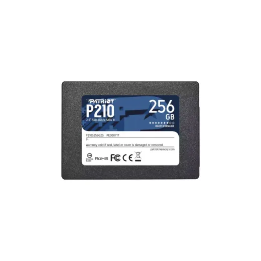
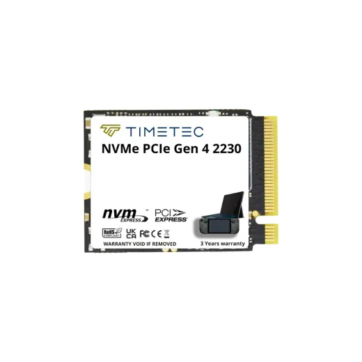
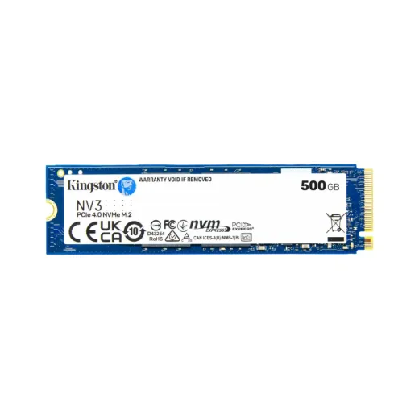
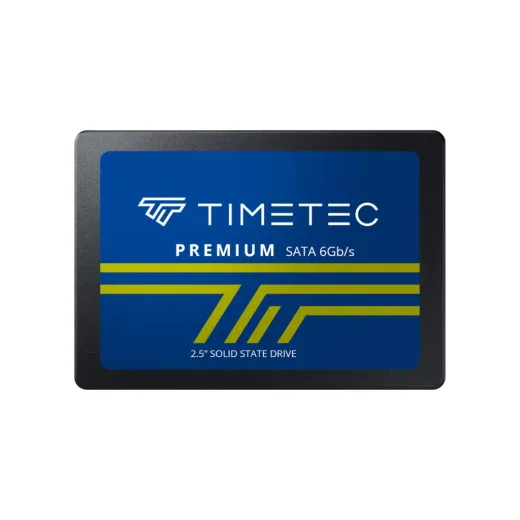
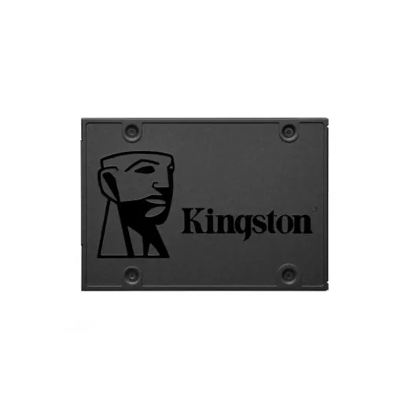
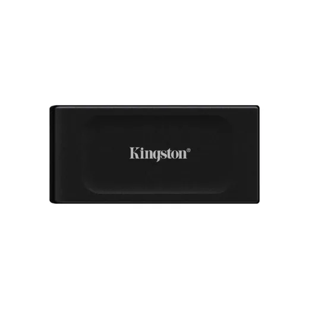
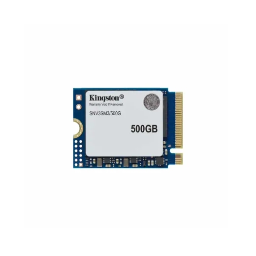
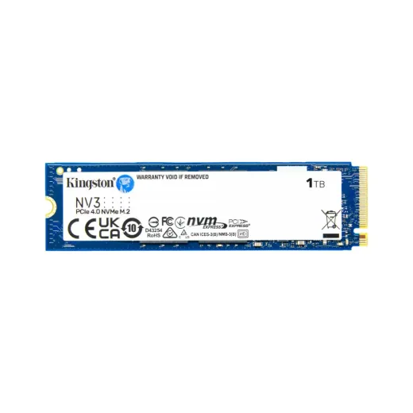

Inicio › Memorias USB, SSD y discos

SSD · Modelo P210S256G25
SSD 2.5" Sata 256GB Patriot P210S256G25 N/D
L 2,185
En Sycom
Precio en cada tienda
| Tienda | Precio | Antes | Disponibilidad | |
|---|---|---|---|---|
| Sycom | L 2,185 | — | Disponible | Ver en tienda › |
Precios referenciales tomados de cada tienda el 14 de noviembre de 2026. El precio válido es el que muestra la tienda al comprar.
Otros memorias usb, ssd y discos SSD
 SSD 2.5" Sata 512GB Timetec SD03 30TT25SATA-512G B N/DL 2,750En Sycom
SSD 2.5" Sata 512GB Timetec SD03 30TT25SATA-512G B N/DL 2,750En Sycom
SSD M.2 2230 Timetec MS60S Gen4x4 · 512GB · 35TT2230GEN4SG-512GL 4,025En Sycom
SSD M.2 2280 500GB Kingston Nvme Pcie Snv3S/500GL 4,250En Sycom
SSD 2.5" Sata 1TB Timetec SD04 30TT25SATA-1TB N/DL 5,000En Sycom
SSD 2.5" SATA 960GB Kingston SA400S37/960GL 5,200En Sycom
SSD Externo M.2 1TB Kingston NVME PCIE SXS1000/1000GL 5,495En Sycom
SSD M.2 2230 500GB Kingston NV3 SNV3SM3/500GL 5,750En Sycom
SSD M.2 2280 1TB Kingston Nvme Pcie Snv3S/1000GL 6,325En Sycom